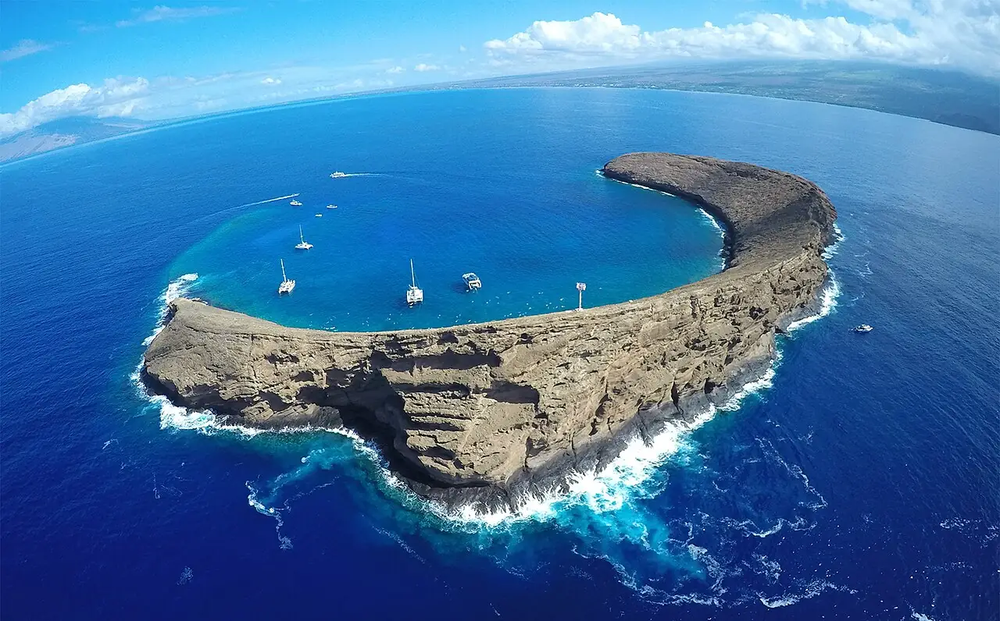

Molokini
Maui, Hawaï, États-Unis · snorkeling, plongée

Cratère volcanique en croissant au large du sud de Maui, protégé en réserve marine. L’intérieur du croissant offre une eau très claire pour le snorkeling, tandis que la face extérieure, la Back Wall, plonge à pic pour les plongeurs confirmés.
- Lieu
- Maui, Hawaï, États-Unis
- Niveau
- Variable selon les conditions
- Activités
- snorkeling, plongée
- Type d'eau
- Mer / océan
- Coordonnées
- 20.63, -156.50 (position approximative du secteur)
Dangers à connaître
- Courants forts sur la face extérieure : réservée aux plongeurs expérimentés.
- Alizés et clapot en fin de matinée, traversée parfois agitée.
- Réserve marine : interdiction de toucher le corail ou de nourrir les poissons.
Le conseil d'Ocean Buddy
Choisis une sortie tôt le matin : la mer est plus calme et la visibilité meilleure avant que les alizés ne se lèvent.
Ouvrir dans Ocean Buddy Télécharger sur l'App Store
Source : Fiche Ocean Buddy · septembre 2026 · à vérifier localement.